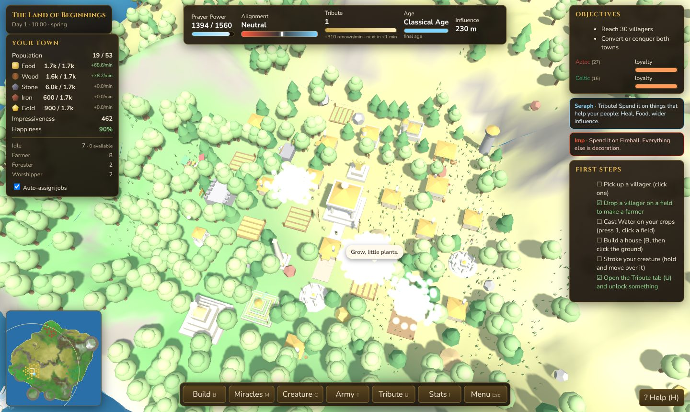

Roughly 5,800 lines of plain JavaScript on top of Three.js. No framework, no build step for the game itself, no runtime dependencies, and no binary assets.
lines across 17 source files
runtime dependencies
the whole game, one HTML file
Three rules shaped everything else.
index.html loads eighteen plain
<script> tags in order. Everything hangs off a single
window.BW namespace. You can open the file from disk and it runs; you can edit a
file and hit reload. The bundler exists only to produce the single-file distribution.zlib. That keeps the repository small and means nothing can rot or go missing.Load order matters, because it is plain classic scripts: utilities first, data second, then the systems that need them.
| File | Lines | Responsibility |
|---|---|---|
util.js | 265 | Seeded PRNG, value noise, maths, spatial hash, the A* nav grid, hex maths |
data.js | 200 | Every tuning number: 24 buildings, 9 miracles, 22 unlocks, ages, adjacency, biomes, the four campaign lands |
terrain.js | 307 | Island heightfield, chunked level-of-detail mesh, water, biome colouring, ray picking |
gfx.js | 897 | Renderer, lights, sky, procedural mesh kits, instanced crowds, particles |
world.js | 357 | Entity store, towns, resource accounting, mesh synchronisation, save and load |
camera.js | 144 | God camera: zoom to cursor, edge scroll, rotate, touch |
audio.js | 211 | Generative ambience and score, synthesised in the browser |
people.js | 526 | Villager needs, jobs, skills, walking, fear, illness and death |
buildings.js | 323 | Placement rules, construction, upgrades, adjacency, fire, towers |
towns.js | 322 | Economy, births, ages, loyalty and conversion, the rival-tribe AI |
miracles.js | 165 | Miracle effects and their consequences |
creature.js | 387 | Creature AI, learning weights, commands, combat |
army.js | 153 | Platoons, unit types, morale, raids |
director.js | 135 | Seasons, weather, pacing events, the two advisors |
hand.js | 460 | The divine hand, picking up and throwing, placement modes, gestures |
ui.js | 606 | HUD, tabs, panels, charts, overlays |
game.js | 384 | Bootstrap, land generation, the main loop, campaign flow |
There are no classes for game objects. Every entity — villager, building, tree, rock, creature,
platoon, town — is a plain object with a numeric id, held in a Map and in
a per-type array. Systems are free functions over that state.
The one rule that makes this work: anything prefixed with an underscore is transient. A
building's Three.js mesh lives at _mesh, a cached adjacency result at
_adj, a dirty flag at _dirty. Serialisation strips every key beginning
with _, so the save format is whatever the simulation actually needs and nothing
else — no manual list of fields to keep in sync.
// world.js — the entire save filter
const strip = (k, v) => (k.startsWith('_') ? undefined : v);
return JSON.stringify(data, strip);A town at full tilt has dozens of villagers and tens of thousands of trees. Drawing each as its
own mesh would be hopeless, so almost everything goes through InstancedMesh crowds
that are rebuilt per frame from state:
| Crowd | Capacity | Notes |
|---|---|---|
| People | 2,500 | Twelve parts each, with per-part local transforms, so legs swing, tools chop and worshippers raise their arms |
| Conifers / broadleaf | 20,000 each | Rebuilt only when the forest changes |
| Need icons | 1,000 | The little symbols above an unhappy villager |
| Rocks, items | 400 each | |
| Particles | 8,000 | One points system for smoke, sparks, rain and dust |
Buildings are the exception: each is a small Group of boxes, cones and cylinders
assembled by a buildingMesh function. Upgrading rebuilds the group with extra storeys
and ornaments, which is why a level-three building visibly fills more of its hex.
Simulation has its own level of detail. Villagers far from the camera tick every third frame with a tripled delta, which keeps a large town cheap without changing its behaviour.

Every island comes from one integer seed, through a mulberry32 PRNG and value-noise fbm. Nothing is stored; the same seed rebuilds the same world exactly, which is also what makes save files small.
Two spatial structures carry the load. A uniform grid hash (cell size 8) answers "what is near this point" for the thousands of nearest-neighbour queries each second. A separate navigation grid (cell size 3) holds walkability and movement cost.
Villagers try a straight line first and only run A* when it is blocked. Roads cost less, so people prefer them and visibly move 40% faster. Buildings stamp themselves into the grid by cell centre, gates are passable to their owner only, and anyone who somehow ends up inside a blocked cell is allowed to walk out — without that escape rule a single mis-stamped cell can strand a villager forever, which is exactly the bug it was written to fix.
The grid is rebuilt lazily: a navDirty flag plus a version counter, so paths
recompute only when the world actually changed under them.
A save is JSON in local storage: the god, the towns, the people, the buildings, the creatures, the effects, the camera, the PRNG cursor and the weather. Trees are the one hand-packed structure — tens of thousands of them become compact arrays rather than objects.
Loading tolerates older saves through a chain of migrations: a resource that was renamed, a field
that did not exist, levels added to buildings. Each is a couple of lines in
loadState, which is cheap insurance against a format that is still moving.
build.js inlines the stylesheet and all eighteen scripts into
dist/index.html — about 1 MB, completely self-contained, works from
file:// with no network. That single file is the browser build, the download on the
releases page, and the page this site serves at /play/.
The desktop app is an Electron shell around exactly that file. The renderer is sandboxed: no Node integration, context isolation on, external links handed to the real browser, and one instance at a time so two copies cannot fight over the same saves. The packaged archive contains three files — the main process, the bundled game, and a manifest.
electron-builder produces an NSIS installer and a portable executable for Windows, dmg and zip for both Mac architectures, and an AppImage and deb for Linux.
Three suites run on every pull request.
About a second, no browser. Every file parses, and the data tables are checked against each other: no building missing from the menu, no category claiming one twice, worker slots matching the upgrade levels, no unlock that nothing defines.
Loads the portable build from disk in headless Chromium, plays five minutes of simulated time, opens every panel, and round-trips a save.
Builds the Electron app and launches it for real, checking it loads the game, keeps Node out of the renderer, and can write a save.
Releases need no approval and no release pull request. Every pull request
carries one label — release:patch, release:minor,
release:major or release:none — and merging a versioned one bumps the
version, dates the changelog, commits and tags on main, builds all three platforms,
and publishes the release with those changelog entries as its notes. The labels create themselves
on first run, so the repository needs no setup.
The static suite is where cheap invariants go. It has already caught a build
menu entry pointing at a building that did not exist, a packaging option that was not in
electron-builder's schema, two installer scripts drifting from the filenames the build actually
produces, and a .gitignore pattern that silently excluded the release script.